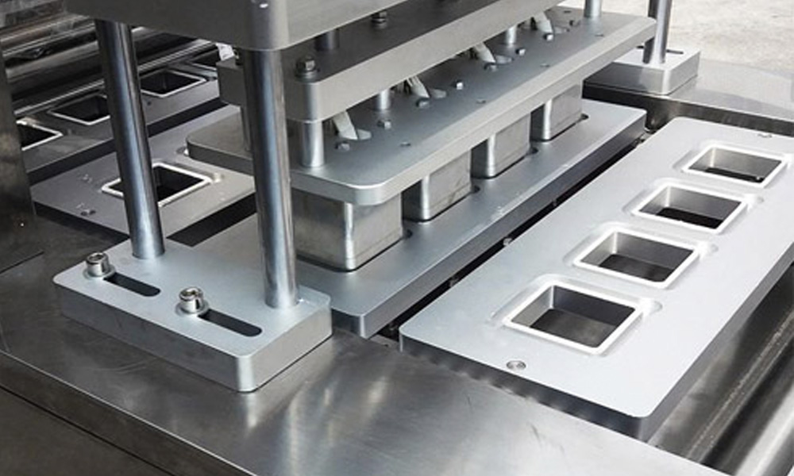

Ремонт трейсилеров: восстановление нагревательных и запечатывающих элементов
конструкции

В процессе ежедневного использования нагревательных и запечатывающих механизмов происходит их постепенная
поломка. Естественный износ комплектующих приводит к таким негативным последствиям:
- нарушенный процесс и качество формовки
- неплотное запечатывание лотков
Выполняя оперативный и качественный ремонт трейсилеров, опытные специалисты помогут восстановить функциональные
особенности нагревательных и/или запечатывающих пластин, а в случае невозможного восстановления – осуществят их
замену.
Наша компания гарантирует не только высококачественную сборку всей конструкции, но и также выполнение
поставленных задач точно в указанные сроки. Таким образом, можно избежать нежелательного простоя техники на
производстве, а потому предприятие точно не понесет убытки.
Дополнительно наши мастера предлагают услугу капитальный ремонт трейсилеров, в которых вышло из строя сразу
несколько комплектующих или одна, но «жизненно важная» деталь.